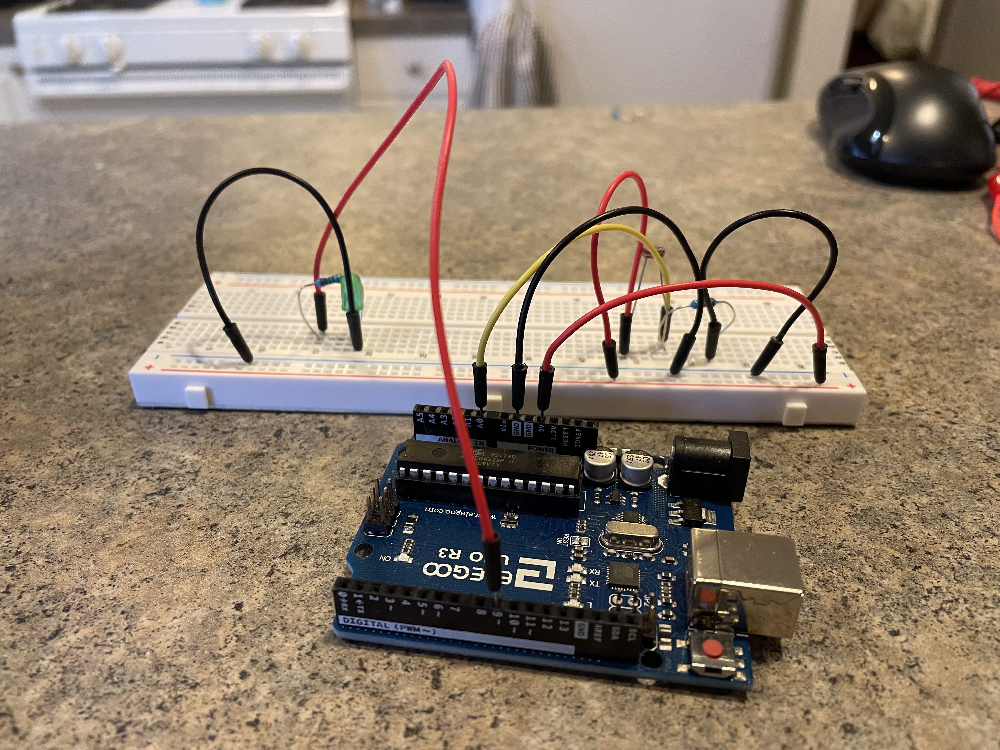
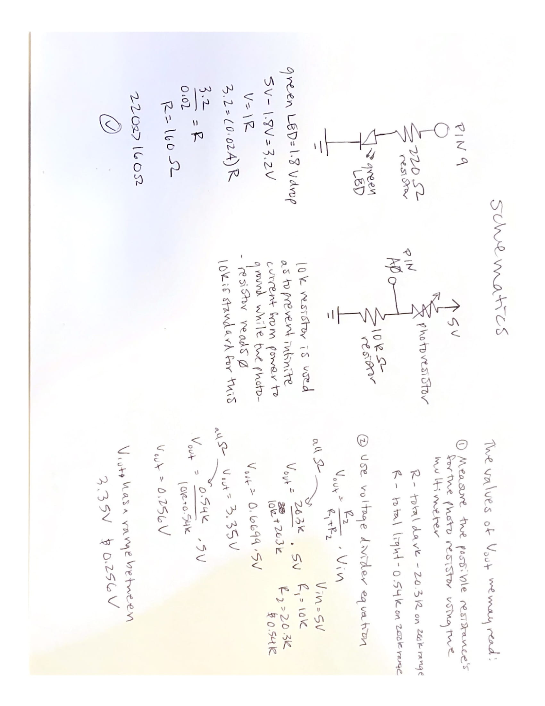
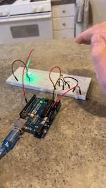
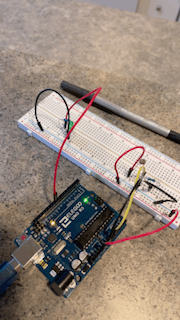

Alissa Acheson's Assignment 3!


Above is the circuit that contains a photoresistor and 10k ohm resistor connected via A0, and a green LED with a 220 ohm resistor.

Above is the calculations for the type of resistors (220 and 10k) used and the schematic of the circuits. Also, the calcuation for the possible Vouts given the variating resistance of the photoresistor, using resistances measured using a multimeter (covering the photoresistor and then exposing it to a flashlight).
Below is the Ardunio code that the board is using, first calibrating to the environments light. This is in set up, setting the minimum and maximum values. Then the code to change and constrain those values into something the LED can understand (0-225), and finally, writing to the LED what to do.
/* Alissa Acheson A3
* This code uses an LED hooked up to PIN ~9
* and a photoresistor (& 10k resistor)
* hooked up to A0
*
*/
//some code adapted from Examples > Analog > Calibration
//from the arduino IDE as well as some inclass code from L4 and 5
int initalVal = 0; //the value of the sensor
int sMin = 1023; // minimum value of the sensor
int sMax = 0; // maximum value of the sensor
void setup() {
//to tell when calibration is occuring
//turns on the LED built into the arduino board
pinMode(13, OUTPUT);
digitalWrite(13, HIGH);
// calibrate during the first five seconds
//millis returns the number of milliseconds passed since the Arduino board
//began running the current program.
while (millis() < 5000) {
//check the value
initalVal = analogRead(A0);
//check to see how environment values compares
//to 1023
if (initalVal > sMax) {
// record the maximum value of the sensor
sMax = initalVal;
}
//check to see how environment values compares
//to 0
if (initalVal < sMin) {
// record the minimum value of the sensor
sMin = initalVal;
}
}
// turn off the light to signal the end of the calibration period
digitalWrite(13, LOW);
//to send start the serial data collection
Serial.begin(9600);
}
void loop() {
//reading in the value from the photosensor,
//values are between 0 and 1023
initalVal = analogRead(A0);
//code for testing
//this reads the photosensors values from A0
//into the serial for viewing (tools-> serial monitor or plotter)
Serial.print("sensor = "); // label for value
Serial.println(initalVal); //value
delay(1); //one millisecond pause
//this value limits the sensor to be within a range
initalVal = constrain(initalVal, sMin, sMax);
//map takes the constrained value and remaps it to a new range
//that was calibrated in the setup of this document
//this range being one appropriate for LED brightness (0-225)
initalVal = map(initalVal, sMin, sMax, 0, 225);
//writes to the LED in pin 9 a value from 0-225
//0 being off and 225 being on
analogWrite(9,initalVal);
//code for testing while building:
//is the light working?
//digitalWrite(9, HIGH);
}
Below is the final operation, the gif on the left shoes the true function of the circuit, the LED turning on and off with the varying resistance of the photoresistor while the gif on the right shows the built in LED (pin 13) light turning on during calibration as indicated in the code, and turning off signalling an end to calibration, then the PIN 9 LED turns on as the code moves out of set up and into loop.
 